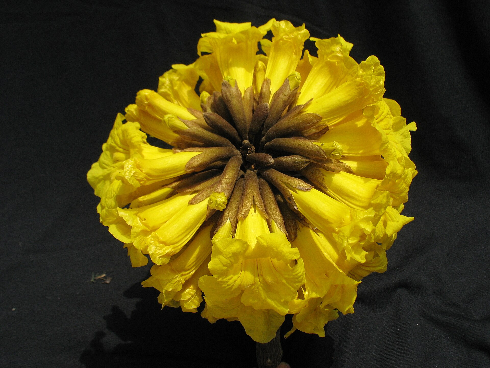

Árvores e Frutíferas
Ipê-amarelo
Handroanthus albus
O ipê-amarelo é uma árvore nativa da América do Sul reconhecida pela floração intensa de cor amarela. A espécie perde parte ou todas as folhas antes de florescer, fazendo com que as flores se destaquem na copa. É muito utilizada em arborização e paisagismo.
- Tipo
- Árvore caducifólia
- Origem
- América do Sul
- Destaque
- Floração amarela intensa